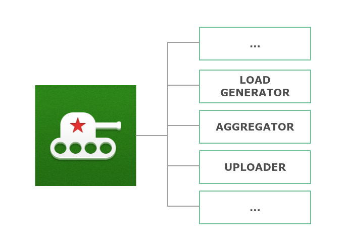
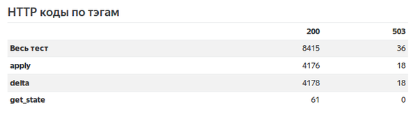
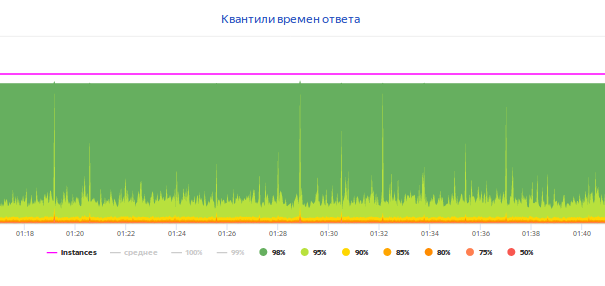

Надежда Миргородская, Яндекс
Надежда Миргородская,
инженер по нагрузочному тестированию
Яндекс

| Phantom | JMeter | BFG | |
|---|---|---|---|
| Производительность | Высокая | Средняя | Средняя |
| Интерфейс | Консоль | GUI | IDE |
| Сценарии? | Нет | Да | Да |
| Язык сценария | - | Java | Python |
Github: https://github.com/yandex/yandex-tank
Web service: https://overload.yandex.net
Support chat: https://gitter.im/yandex/yandex-tank

class LoadTest(object):
def __init__(self, gun):
self.gun = gun
def get_state(self):
response = requests.get(get_state_url)
config = parse_state(response)
def apply(self):
requests.post(apply_url, data=config)
class LoadTest(object):
def get_state(self):
with sef.gun.measure('get_state') as measure:
response = self.client.get_state()
measure['proto_code'] = response.status_code
result = parse_state(response)
def default(self):
self.get_state(get_state_url)
self.apply(config)
until state == 'DONE':
self.check_state()
[bfg]
gun_type = ultimate
loop = 100
instances = 10
instances_schedule = const(10,10m)
ammofile = ./ammo.txt
[ultimate_gun]
module_name = performance_test


def get_state(self):
with self.gun.measure("activated"):
with self.gun.measure("apply"):
self.apply()
with self.gun.measure("check_state"):
self.check_state()

[autostop]
autostop = http(5xx, 20%, 60s)
autostop = time(60s, 10m)


Надежда Миргородская
инженер по нагрузочному тестированию
https://szypulka.github.io
szypulka@yandex-team.ru
telegram: szypulka